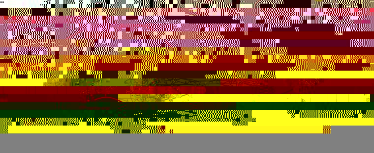
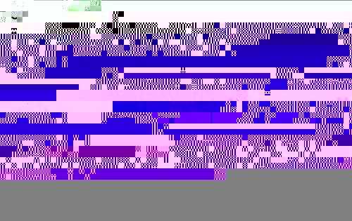

Popitam Glossary
-
LackGaps
The lackGaps are signified by dashes (---) in the scenarios and correspond to
missing information in the spectrum.
Top
-
ModGaps
The modGaps are signified by stars (***) in the scenarios and are characterized
by a mass shift. They correspond to one (or several) modifications (or
mutations).
In Popitam, one modGap may correspond to many events, such as
post-translational
modifications, mutations, transpeptidation events and non-specific
cleavages.
The number of stars is not correlated to the number of modifications
and one
modGap does not systematically correspond to only one modification
event.
Top
-
Run-and-jump path
A run-and-jump path is a path in the spectrum graph that runs through
edges or jumps from nodes to nodes. Jumps correspond either to a lack
of information in the spectrum or to the presence of one or several
modifications. It corresponds to a possible interpretation of the
spectrum
given a candidate peptide.

Top
-
Scenario
A scenario is an arrangment of one or several tags separated by gaps.
Popitam considers two types of gaps and aligned on a theoretical
sequence. A scenario can then be considered as a possible
interpretation of the spectrum peak patterns for a theoretical peptide.
Using the flanking masses of the tags, Popitam evaluates if a gap
contains a modification or a mutation (in which case it is denoted as modGap), or if it arises
from a lack of information in the spectrum due
to low peak statistics (in which case, it is denoted as lackGap)).

The figure shows scenarios obtained during a run performed with
Popitam. For
each scenario, the candidate peptide sequence is given in black
letters. The run-and-jump paths are indicated below the peptide
sequences. By convention, we will refer to simple edges with upper case
letters, and to double edges with lower case letters. By convention,
upper case letters correspond to one amino acid edges and lower case
letters correspond to two amino acid edges in the run-and-jump
path. Red stars represent gaps associated to modification events
(modGaps) that correspond to
jumps in the spectrum graph. For each
modGap, a shift value is reported. In scenario 0, the correct sequence
was presented, and the correct path was followed in the graph. The
first shift corresponds to a carbamidomethylation, and the second one
corresponds to an oxidation. Scenario 1 shows a different -and false-
spectrum interpretation for the same peptide. Scenarios 2, 3 and 4
correspond to interpretation attempts for incorrect peptides. Note that
the number of stars is not correlated to the number of modifications
and one modGap does not systematically correspond to only one
modification event.
Top -
Genetic Programming
Genetic programming (GP) is a non deterministic approach that is
inspired
from the evolution of species. Evolution theory is an attractive model
because it can be considered as an optimization method that causes
organisms to bet better adapted in a changing environment. Key
ingredients for an evolution process to take place are: a)
overproduction (more offsprings are produced than will ultimately
survive and reproduce, generating a struggle for existence); b)
inheritance (characteristics are transmitted to the descendants) and c)
variation (inheritable features vary from individual to individual).
GP models these key ingredients and applies them
on a population of solutions to a given problem.
We used Genetic Programming to explore various functions for scoring scenarios produced by
Popitam. The functions are coded as trees.
They are built from a set of 6
different nodes, comprising the
mathematical operators addition, subtraction, multiplication division,
power, and conditional statement IF_LESS, and from a set of 13
different leaves, represented by the 12 scenario’s subscores plus a
random coefficient. This choice presents the
advantage that it is possible to use equally positive or negative
values, as well as integers or floats, except for the division operator
that does not accept a division by 0. The
search space is formed by all consistent scoring functions that can be
built from the set of nodes and leaves (with repetition). The aim of
the GP process is to find scoring functions that not only give the
highest score to the correct candidate peptide, but also efficiently
discriminates the correct peptide from all the other ones.
Top -
Scenario scoring functions
The challenge for Popitam is to succeed in spotting the correct
spectrum interpretation (also called scenario) among all obtained
ones.
This is achieved by attributing to each scenario a score that measures
the quality of the interpretation given the candidate peptide.
The scoring function plays an essential role in the efficiency of an
MS/MS identification method. In Popitam, the scenario's scoring must be
all the more efficient as Popitam authorizes any type of modifications
during the search, thus greatly increasing the search space. As we
wanted to capture a maximum of information for the scoring procedure,
we
defined a set of twelve empirical subscores. Each of them is based on a
particular aspect, such as the coverage of the candidate peptides by
the tags, the pertinence of the ionic hypotheses used, and so on.
The twelve subscores are the following:
- KS1_a, corresponding
to the number of lackGap
- MS1_b, corresponding to the number of modGap
- CS1_c, based on the coverage of the candidate sequence by
simple edges
- CS2_d, based on the coverage of the candidate sequence by
simple and double edges
- CS3_e, based on the coverage of the candidate sequence by
simple and double edges or by gaps due to missing fragments in the
spectrum
- PS1_f, based on the confidence scores of nodes parsed by the
scenario
- IS1_g, based on the intensity of the peaks included in the
nodes parsed by the scenario
- FS1_h, based on the merging rate of the nodes parsed by the
scenario
- ES1_i, based on errors reported between observed and
expected
masses (this score should be minimized)
- RS1_j, based on multiple presence of given peaks in the
scenario (this score should be minimized)
- SS1_k, based on the longest series of b-ions observed in the
scenario
- SS2_l, based on the longest series of y-ions observed in the
scenario
We used Genetic
Programming to explore the space of the possible
combinations of subscores and learned three functions aimed at scoring
scenarios with 0, 1 and 2 modGaps.
The functions are coded as trees. The format is based on the DOT
language (see http://www.graphviz.org/
for more information).
To visualize the function used to score scenarios with 0 modGap,
click here .
To visualize the function used to score scenarios with 1 modGaps, click
here .
To visualize the function used to score scenarios with 2 modGaps, click
here .
Top
{kind=link}
{kind=link}
{kind=link}